Kai ZHANG 张 凯
I am a tenure-track associate professor at School of Naval Architecture, Ocean and Civil Engineering, Shanghai Jiao Tong University
Email / Google Scholar / CV /
发表论文 Publications
- 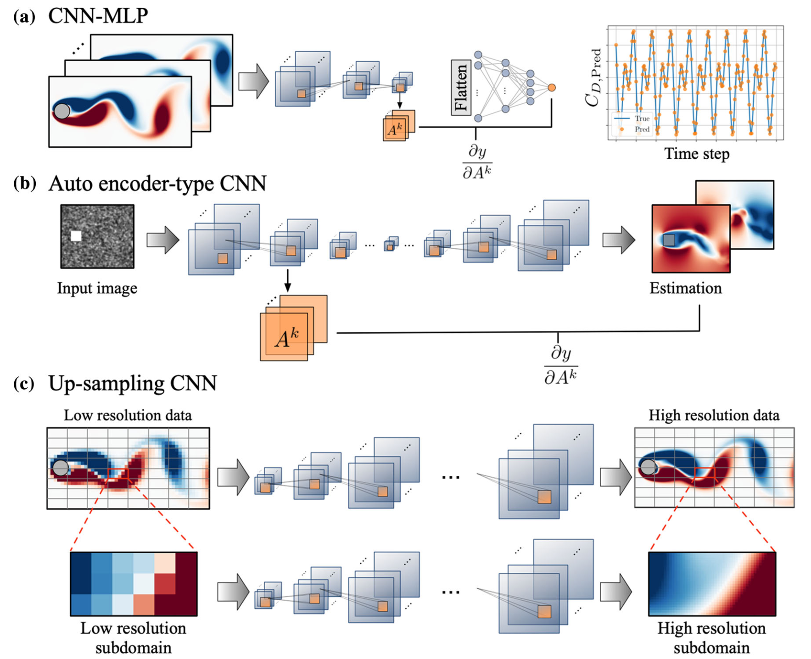
Toward practical uses of neural networks for fluid flow estimation
Morimoto, M., Fukami, K., Zhang, K. & Fukagata, K.
Neural Computing and Applications 34, 3647–3669. (2022) |link--------------- 2021 ---------------
- 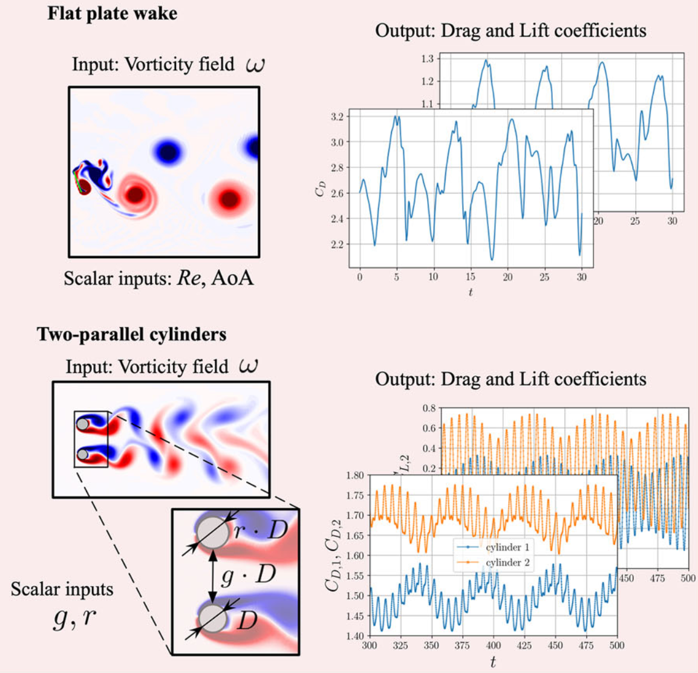
Convolutional neural networks for fluid flow analysis: toward effective metamodeling and low dimensionalization
Morimoto, M., Fukami, K., Zhang, K., Nair, A. G. & Fukagata K.
Theoretical and Computational Fluid Dynamics 33, 103603. (2021) |link - 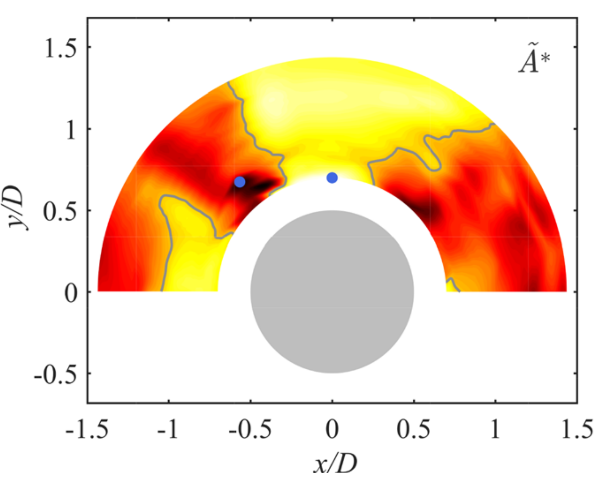
Vortex-induced vibrations of two rigidly coupled circular cylinders of unequal diameters at low Reynolds number
Ping, H., Zhu, H., Zhang, K., Zhou, D., Bao, Y. & Han, Z.
Physics of Fluids 33, 103603. (2021) |link - 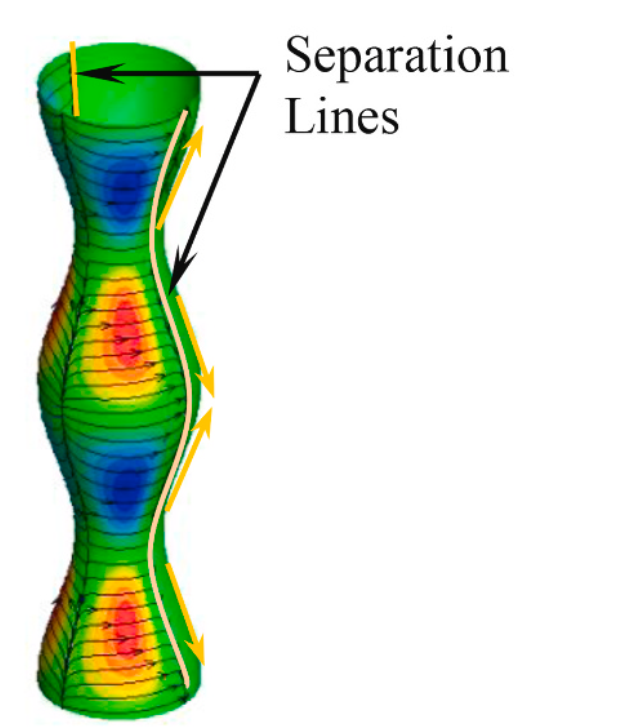
Vortex characteristics and flow-induced forces of the wavy cylinder at a subcritical Reynolds number
Zhang, Z., Tu, J., Zhang, K., Yang, H., Han, Z., Zhou, D., Xu, J., & Zhang, M.
Ocean Engineering 222, 108593. (2021) |link--------------- 2020 ---------------
-
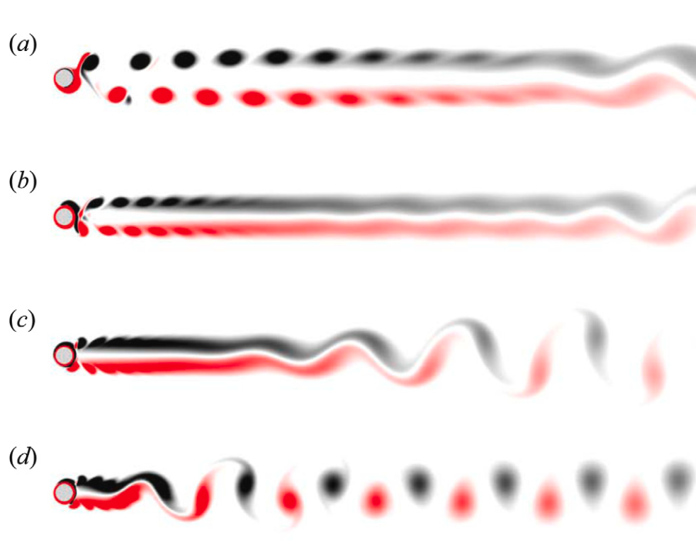
Wake dynamics behind a rotary oscillating cylinder analyzed with proper orthogonal decomposition
Ping, H., Zhu, H., Zhang, K., Wang, R., Zhou, D., Bao, Y. & Han, Z.
Ocean Engineering 218, 108185. (2020) |link -
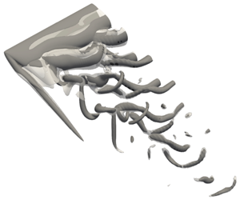
On the formation of three-dimensional separated flows over wings under tip effects
Zhang, K.*, Hayostek, S., Amitay, M., He, W., Theofilis V. & Taira, K.
Journal of Fluid Mechanics 895, A9. (2020) |link |arXiv--------------- 2018 ---------------
-
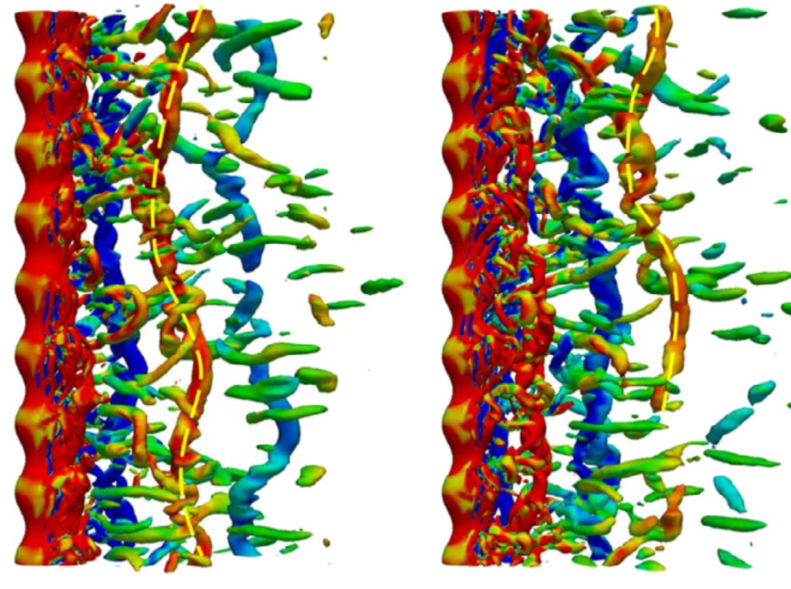
Large eddy simulation of flow over inclined wavy cylinders
Zhang, K., Katsuchi, H., Zhou, D., Yamada, H., Bao, Y., Han, Z & Zhu, H.
Ocean Engineering 80, 179-198. (2018) |link -
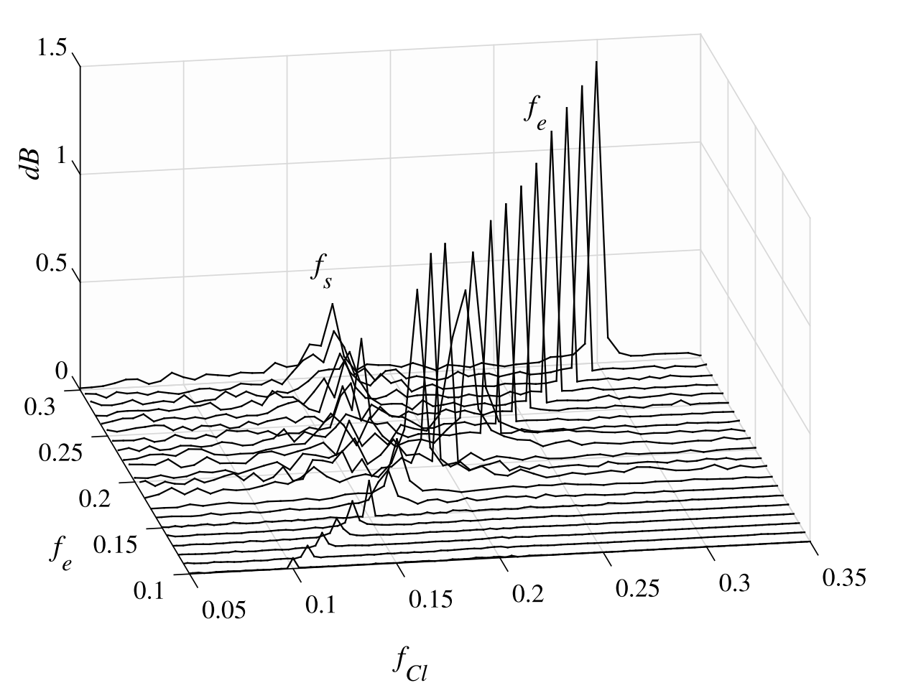
Numerical study of flow past a transversely oscillating wavy cylinder at Re=5000
Zhang, K., Katsuchi, H., Zhou, D., Yamada, H., Bao, Y., Han, Z & Zhu, H.
Ocean Engineering 169, 539-550. (2018) |link -
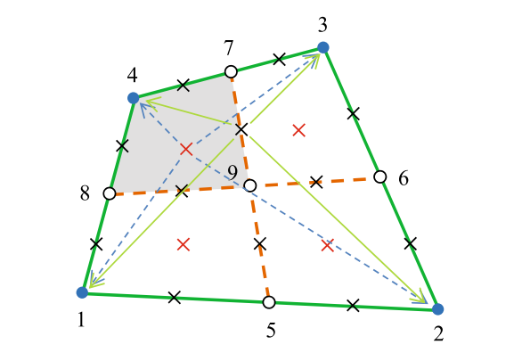
A smoothed finite element approach for computational fluid dynamics: applications to incompressible flows and fluid–structure interaction
He, T. & Zhang H. & Zhang, K.
Computational Mechanics 62, 1037–1057. (2018) |link--------------- 2017 ---------------
-
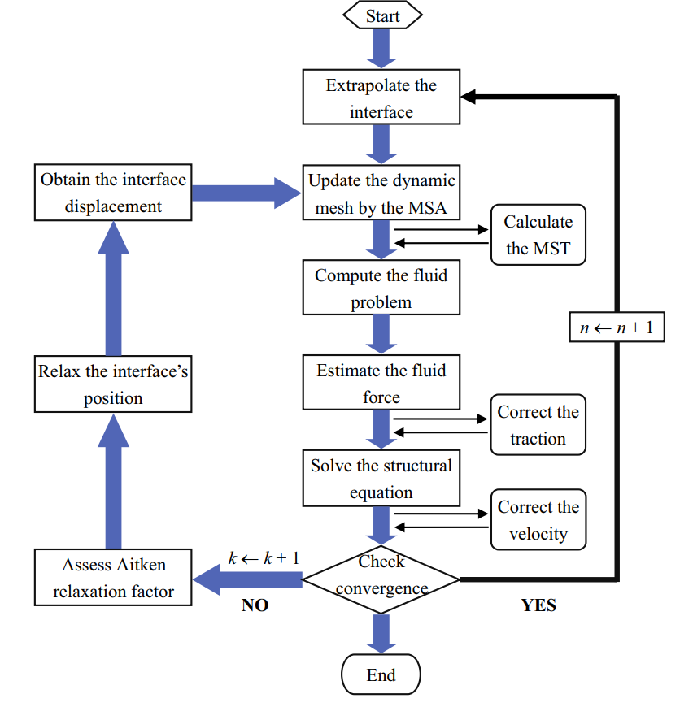
An Overview of the Combined Interface Boundary Condition Method for Fluid–Structure Interaction
He, T. & Zhang, K.
Archives of Computational Methods in Engineering 24, 891–934. (2017) |link -
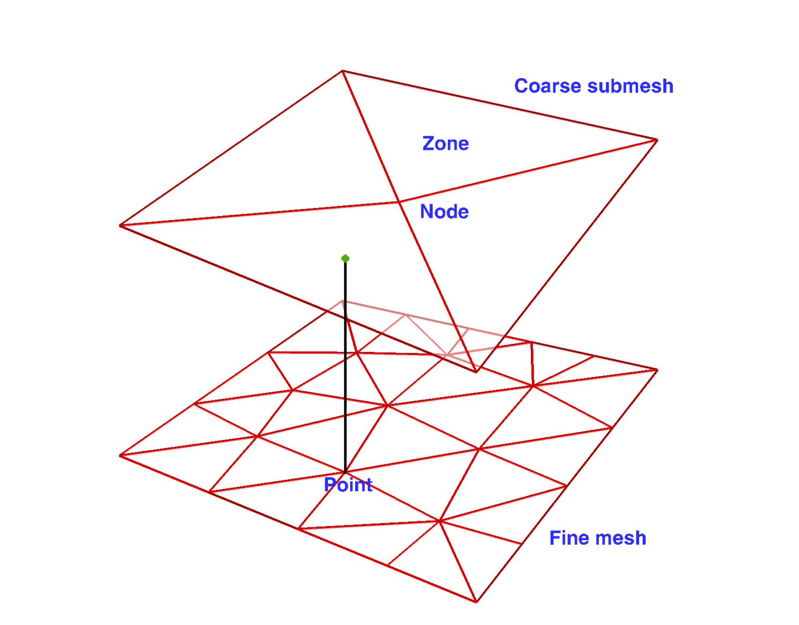
AC-CBS-Based partitioned semi-implicit coupling algorithm for fluid-structure interaction using stabilized second-order pressure scheme
He, T. & Zhang, K. & Wang, T.
Communications in Computational Physics 21(5), 1449-1474. (2017) |link -

Numerical simulation of vortex induced vibrations of a flexibly mounted wavy cylinder at subcritical Reynolds number
Zhang, K., Katsuchi, H., Zhou, D., Yamada, H., Zhang, T. & Han, Z.
Ocean Engineering 133, 170-181. (2017) |link--------------- 2016 ---------------
-
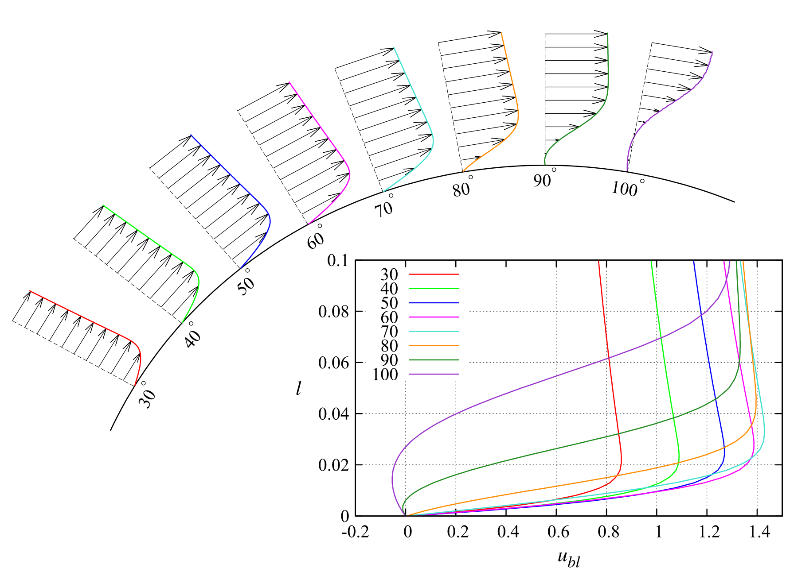
Numerical study on the effect of shape modification to the flow around circular cylinders
Zhang, K., Katsuchi, H., Zhou, D., Yamada, H. & Han, Z.
Journal of Wind Engineering and Industrial Aerodynamics 152, 23-40. (2016) |link--------------- 2015 ---------------
-
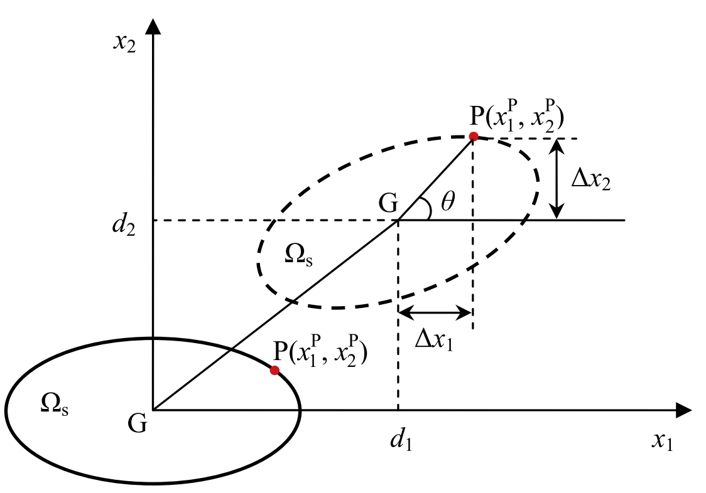
Combined interface boundary condition method for fluid–structure interaction: Some improvements and extensions
He, T. & Zhang, K.
Ocean Engineering 109(15), 243-255. (2015) |link
--------------- 2022 ---------------


Conference and Talks
- Winograd Algorithm for AdderNet
Wenshuo Li, Hanting Chen, Mingqiang Huang, Xinghao Chen, Chunjing Xu, Yunhe Wang
ICML 2021 | paper